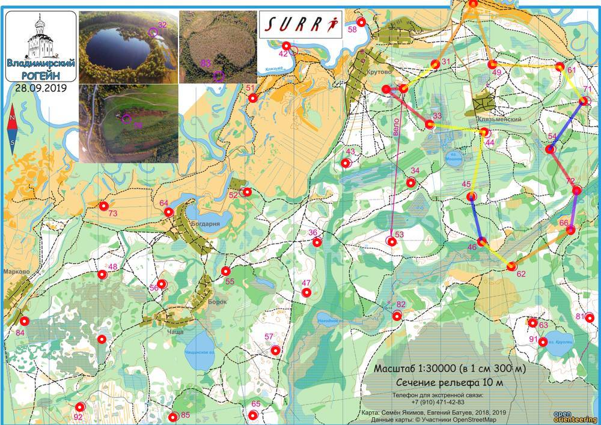

| Команда | МГУ2 |
| Номер | 137 |
| Участники | Мордирос Александр, 1975 Мордирос Михаил, 2006 |
| Группа | м4 |
| Место | 9 |
| Очки | 67 |
| Штраф | 0 |
| Время | 03:59:04 |
| Результат | 67 |
| КП | Время | Сплит | Расстояние, км | Темп, мин/км | Отметка, сек |
|---|---|---|---|---|---|
| С | 12:00:00 | ||||
| 32 | 12:06:46 | 00:06:46 | 0.346 | 19.6 | 1 |
| 33 | 12:32:17 | 00:25:31 | 1.128 | 22.6 | 3 |
| 44 | 12:40:41 | 00:08:24 | 1.114 | 7.5 | 1 |
| 45 | 12:52:39 | 00:11:58 | 1.348 | 8.9 | 3 |
| 46 | 20:38:00 | 4591:45:21 | 0.946 | >999 | 0 |
| 62 | 13:34:49 | -4592:56:49 | 0.783 | <1 | 18 |
| 66 | 13:52:12 | 00:17:23 | 1.405 | 12.4 | 2 |
| 72 | 14:15:45 | 00:23:33 | 0.823 | 28.6 | 4 |
| 54 | 14:38:22 | 00:22:37 | 0.997 | 22.7 | 13 |
| 71 | 20:38:15 | 4589:59:53 | 1.198 | >999 | 0 |
| 61 | 15:06:48 | -4590:28:33 | 0.844 | <1 | 3 |
| 49 | 15:20:32 | 00:13:44 | 1.371 | 10.0 | 5 |
| 59 | 15:35:41 | 00:15:09 | 1.309 | 11.6 | 6 |
| 31 | 15:53:57 | 00:18:16 | 1.473 | 12.4 | 5 |
| Ф | 15:59:04 | 00:05:07 | 0.808 | 6.3 | |
| 03:59:04 | 14.266 км | 16.8 мин/км |
